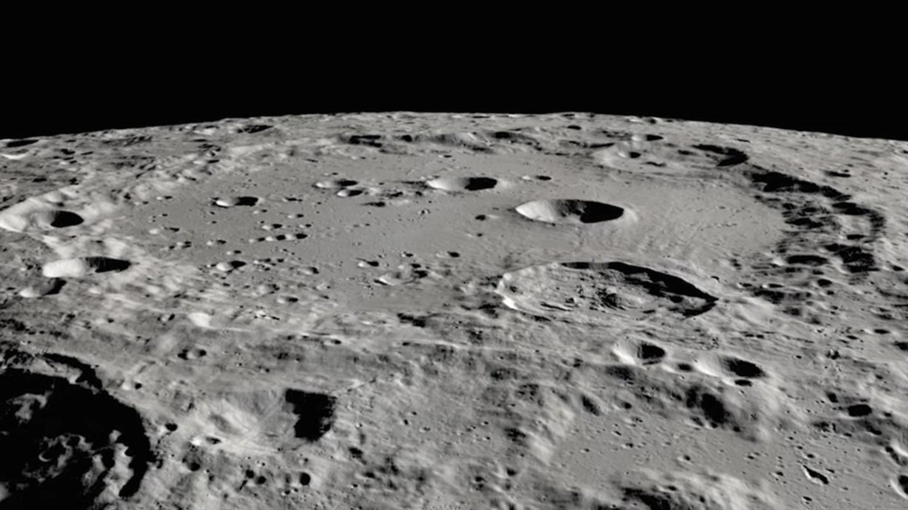
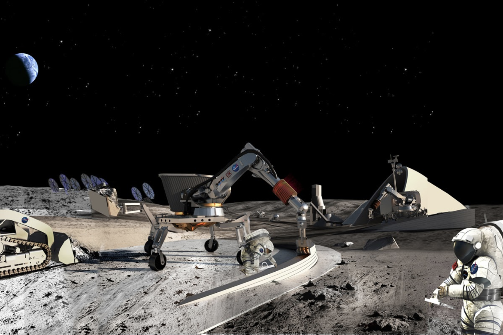

Lunar mining
With increased national and commercial lunar traffic to the surface of the moon, and crewed lunar bases in the planning phases, the demand will increase for on-surface water and propellant (at first simply produced from the water). Initial demonstrations will prove the viability. Then stores of consumables will serve as back-up reserves in the event of mission anomalies. Eventually, economics will allow larger mining operations. Mission planning can count on lunar-sourced supplies rather than spending the money, time, and resources to launch them from Earth and land them on the Moon.
Sunlit Clavius Crater on the Moon, where water has been confirmed in 2020 by NASA’s Stratospheric Observatory for Infrared Astronomy (SOFIA). Previously we thought water only existed in the dark icy craters of the poles. Credit: NASA/USGS.
Water mining and propellant production may give way to collection (or removal) of other useful resources (like regolith for radiation-protection and building materials). In situ operations will fuel further advances in lunar mining.
Image credit: NASA.
WIth equipment on the surface, in-situ lunar prospecting activity will grow and other materials will be positively quantified, potentially opening new markets.